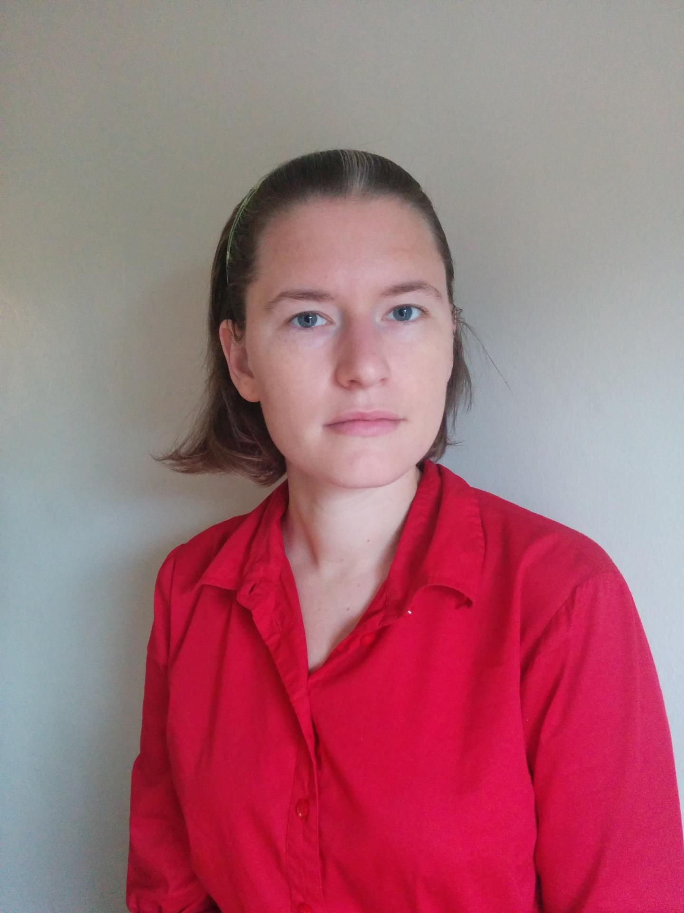

Emma Tosch
She/her
Assistant Professor
University of Vermont
Office: E456 Innovation Hall
E-mail: etosch at uvm dot edu
I am currently looking for PhD students! Feel free to reach out for a chat if you think we might work well together. If you'd like to learn more about what I do, and my advising style, consider checking out:
Research Interests
The research questions that motivate me relate to supporting sound experimental methodologies within complex software systems. I use methods from domain-specific programming language design to build languages and tools for data scientists and social scientists.
Teaching
- UVM CS 253: Reinforcement Learning, Spring 2021
E456 Innovation Hall,
Burlington, VT
|

|